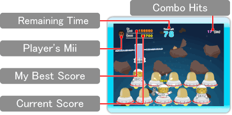
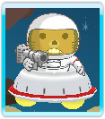
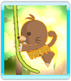
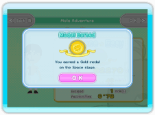

Game Screen

Stages and Levels
There are four stages and three levels, each with its own time limit, speed, and type of mole. At the start, you will only be able to choose the Jungle stage on the Easy difficulty. As you progress, you will be able to choose other stages and difficulties.
Co-op Play
Two players can work as a team in this mode.
(You will need two Wii Remotes.)
Scoring Points
The sooner you bash the moles after they appear, the more points you can gain.
Combo Hits
You can set off a combo by bashing a succession of moles without missing a single one. This adds a bonus to the regular score you earn. The longer you can keep the combo going, the more bonus is added.

Attacking Moles
Moles equipped with weapons will attack unless you bash them quickly. If attacked, you will lose your combo and be unable to hit any moles for a period of time.

Golden Moles
A golden mole might appear if you perform certain actions in the stage. These moles are worth more points than regular moles.

Medals
(1-Player Mode Only)
If you earn a high enough score, you may earn a medal after the end of a stage. Depending on your score, you might be awarded a gold, silver, or bronze medal.
If you can collect all the gold medals, you will be awarded with a special hammer for advanced players.
Nintendo Wi-Fi Connection Ranking (1-Player Mode Only)
Whenever you beat your personal high score, you'll have a chance to send your score to Nintendo Wi-Fi Connection Ranking.